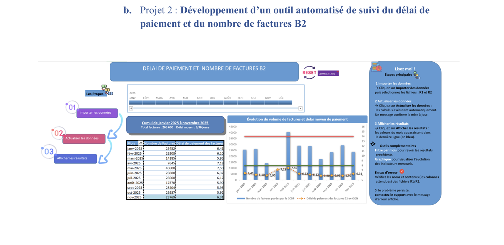
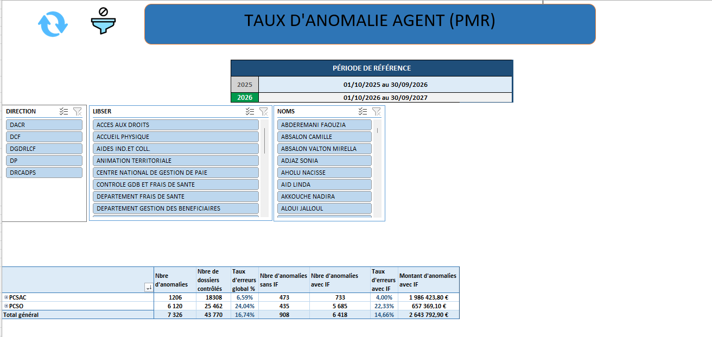

Grâce SOUKOU
🎓 Étudiante en science des données
Passionnée par les mathématiques et les projets concrets

🎓 Étudiante en science des données
Passionnée par les mathématiques et les projets concrets
Je vais vous présenter quelques projets académiques, appelés SAÉ, que j’ai réalisés au cours de mes trois années de BUT. Cliquez sur la marche correspondant à l’année pour découvrir les projets concrets menés en BUT 1 , BUT 2 et BUT 3.
Dans le cadre de ma deuxième année de BUT Science des données, j'ai effectué un stage de quatre mois au sein de la CPAM du Val-de-Marne. Cette expérience s'est prolongée à partir de septembre 2025 par une alternance dans le même service, en tant que chargée de data visualisation et d'automatisation d'outils d'aide à la décision. Cette continuité m'a permis de m'inscrire pleinement dans les missions du service, de gagner en autonomie et de développer une véritable compréhension des enjeux liés à l'exploitation des données dans un contexte professionnel.
Au-delà des compétences techniques que j'ai pu mobiliser et renforcer, cette expérience s'inscrit dans un environnement de travail dont les valeurs correspondent pleinement aux miennes. J'évolue au sein d'une équipe particulièrement bienveillante, où la communication, l'entraide et l'encouragement mutuel occupent une place centrale. L'esprit collectif est très présent au quotidien, notamment à travers des temps de partage réguliers qui favorisent la cohésion et la convivialité. Cette dynamique fait écho au slogan de l'organisme, « Agir ensemble, protéger chacun », que j'ai pu observer concrètement dans les relations entre collaborateurs comme dans la manière de conduire les projets.
C'est dans ce contexte que j'ai eu l'opportunité de participer à plusieurs projets structurants, dont l'un constitue aujourd'hui une réelle source de fierté pour moi, car je me suis autoformée à un nouvel outil sur lequel j'avais très peu d'expérience, afin de répondre de manière autonome aux besoins du service et de proposer une solution adaptée. J'ai donc développé un tableau de bord Power BI interactif pour le service dans lequel je travaillais : le contrôle de gestion. Cet outil permet le suivi de tâches, la visualisation de KPIs et la production de rapports automatisés. Voici ci-dessous un aperçu des différentes vues du tableau.


Mon alternance à la CPAM du Val-de-Marne m'a permis de mieux comprendre le type de missions dans lesquelles je m'épanouis. Avant cette expérience, j'appréciais déjà travailler avec les données, mais je ne savais pas encore dans quel contexte professionnel je souhaitais mobiliser ces compétences.
Au fil des projets qui m'ont été confiés, j'ai découvert que j'aimais particulièrement concevoir des outils qui répondent à un besoin concret exprimé par des utilisateurs. Ce qui me motive n'est pas seulement l'aspect technique du développement, mais le fait de proposer une solution utile qui facilite le travail d'une équipe ou améliore le pilotage d'une activité.
J'ai également découvert une capacité d'autonomie plus importante que je ne l'imaginais. Lorsque j'ai été amenée à développer un tableau de bord Power BI pour le service Contrôle de gestion, je maîtrisais encore peu cet outil. J'ai dû me former de manière autonome, rechercher des ressources, expérimenter différentes solutions et progresser par essais successifs afin de répondre aux attentes du service. Cette expérience m'a montré que je suis capable d'apprendre rapidement un nouvel environnement technique lorsque j'ai un objectif concret à atteindre.
Cette alternance m'a aussi permis de prendre conscience de l'importance des compétences relationnelles dans les métiers de la donnée. Les échanges réguliers avec les utilisateurs, la compréhension de leurs besoins et l'adaptation des outils à leurs contraintes sont des dimensions que je n'avais pas pleinement perçues à travers les projets académiques. J'ai compris que la réussite d'un projet ne dépend pas uniquement de sa qualité technique, mais également de sa capacité à être comprise, adoptée et utilisée par ses destinataires.
Enfin, cette expérience a confirmé mon intérêt pour les métiers qui se situent à l'interface entre les données, l'automatisation et l'aide à la décision. Elle a également renforcé mon envie de poursuivre mes études afin d'acquérir des compétences analytiques et statistiques plus avancées.
Au début de mon alternance, j'ai travaillé sur la création d'outils Power BI destinés principalement à mon service et à ses managers. Progressivement, j'ai été amenée à développer des outils Excel/VBA utilisés par d'autres services de la caisse, comme cet outil de suivi automatisé du délai de paiement et du nombre de factures B2, qui a permis à une manager de réduire considérablement le temps nécessaire au calcul de ses indicateurs.

Projet 2 — Outil automatisé de suivi du délai de paiement et du nombre de factures B2
Par la suite, j'ai participé à la création d'outils destinés à un périmètre encore plus large, utilisés par plusieurs managers ainsi que par la direction pour le suivi d'indicateurs de pilotage à l'échelle de l'organisme.

Outil de pilotage destiné aux managers et à la direction
Cette évolution constitue pour moi une véritable source de fierté : au-delà des compétences techniques acquises, elle témoigne de la confiance que mes responsables ont progressivement accordée à mon travail, à mon autonomie et à ma capacité à proposer des solutions adaptées aux besoins du service.
Mon entourage m'a toujours décrite comme quelqu'un de sérieux et investi, et cette perception s'est confirmée : j'ai rapidement trouvé ma place au sein de l'équipe et gagné en responsabilités. Mais cette alternance m'a aussi réservé des surprises plus inattendues, comme de découvrir que je pouvais désormais boire du café tous les jours, ce qui était probablement la chose la moins envisageable avant mon entrée dans le monde professionnel.
J'ai également pris la mesure de l'importance des rituels informels dans la vie d'une entreprise. À la CPAM, le petit-déjeuner partagé avec les collègues va bien au-delà du simple café du matin : ces moments favorisent les échanges, renforcent la cohésion d'équipe et permettent d'aborder la journée dans une ambiance agréable. La vie professionnelle ne se résume donc pas aux missions et aux objectifs ; elle repose aussi sur les relations humaines et les moments de partage.
Au-delà des compétences techniques et des projets académiques, ce dont je suis le plus fière aujourd'hui est le chemin personnel que j'ai parcouru.
Quitter mon pays, ma famille, mes repères et venir étudier à plusieurs milliers de kilomètres n'a pas été une décision facile. C'était un choix guidé par une conviction profonde : celle que l'éducation, le travail et la persévérance peuvent transformer une vie. En arrivant en France, j'ai dû tout reconstruire — apprendre à m'adapter à un nouvel environnement, développer mon autonomie, sortir de ma zone de confort et croire en moi-même dans les moments de doute.
Chaque étape de mon parcours a été une victoire : comprendre un cours difficile, réussir un projet, prendre la parole en public, m'intégrer dans un nouvel environnement, trouver ma place dans le monde professionnel. Derrière chaque réussite se cachent des efforts, des remises en question, mais surtout une détermination constante à avancer.
Cette expérience m'a appris la résilience, l'indépendance, la capacité à m'adapter et à évoluer seule tout en restant fidèle à mes valeurs. Aujourd'hui, lorsque je regarde mon parcours, je ne vois pas seulement une étudiante en science des données : je vois une personne qui a osé partir loin pour construire son avenir. Et c'est cette force intérieure, cette capacité à me dépasser et à continuer à avancer malgré les défis, qui constitue ma plus grande fierté.
Après une classe préparatoire dans mon pays d'origine puis un BUT Science des données en France, je m'étais fixé comme objectif de mettre toutes les chances de mon côté pour poursuivre mes études dans une formation reconnue en mathématiques appliquées et statistiques. Cet objectif est aujourd'hui atteint : je poursuivrai l'année prochaine en Master 1 Applied Mathematics and Statistics à l'Institut Polytechnique de Paris.
À l'issue de cette première année de master, je souhaite me spécialiser dans un domaine appliqué à la finance, à l'économie ou à l'actuariat, afin de développer une expertise quantitative plus poussée.
À terme, je souhaite évoluer dans les secteurs de la finance ou de l'assurance, dans des métiers mobilisant les mathématiques, les statistiques et l'analyse de données pour accompagner la prise de décision et l'évaluation des risques.
Pour aller plus loin, vous pouvez consulter ou télécharger mon rapport d'activité complet du semestre 3.
📥 Télécharger le rapport d'activité (PDF)